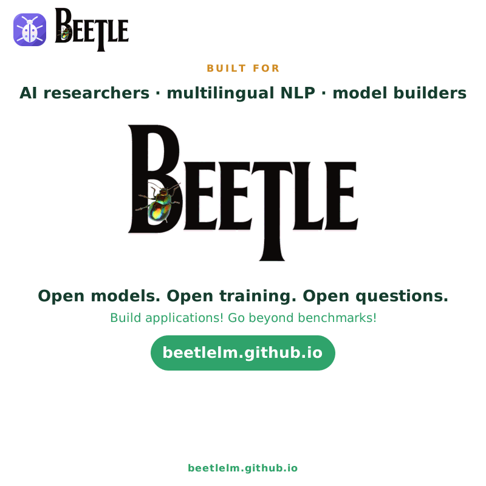
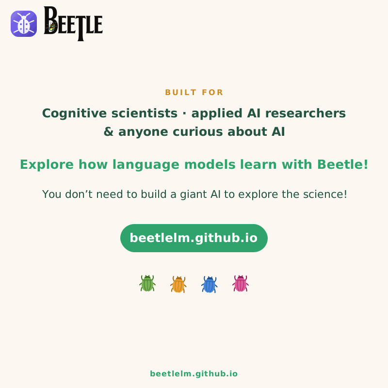

Our open-source playground for experimenting with how AI learns.
21 languages · 330 models · thousands of training checkpoints
Beetle brings together open model weights, training checkpoints, datasets, tokenisers, a training framework and analysis tools, giving you the resources to go beyond evaluating finished models and start investigating how they develop.
Stop treating AI models as black boxes. Start exploring how they develop, and help us build a better scientific understanding of language models for safer, fairer AI.
Whether you are interested in building small language models, AI interpretability, building better AI systems for more languages, or researching how humans learn language, the Beetle model suite and our open-source training, data and analysis tools let you ask cool questions.


With 330 monolingual and bilingual models, spanning 21 first languages, five language-exposure curricula, and approximately 30 checkpoints per model, Beetle gives researchers an unprecedentedly controlled way to investigate how models acquire and process multiple languages. Our open-source Beetle Framework brings together open model weights, training checkpoints, data, tokenisers and analysis tools in one research suite.